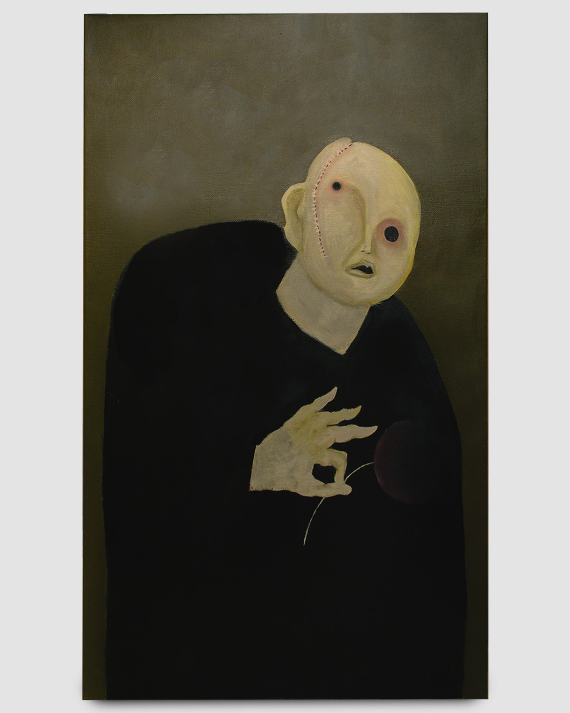
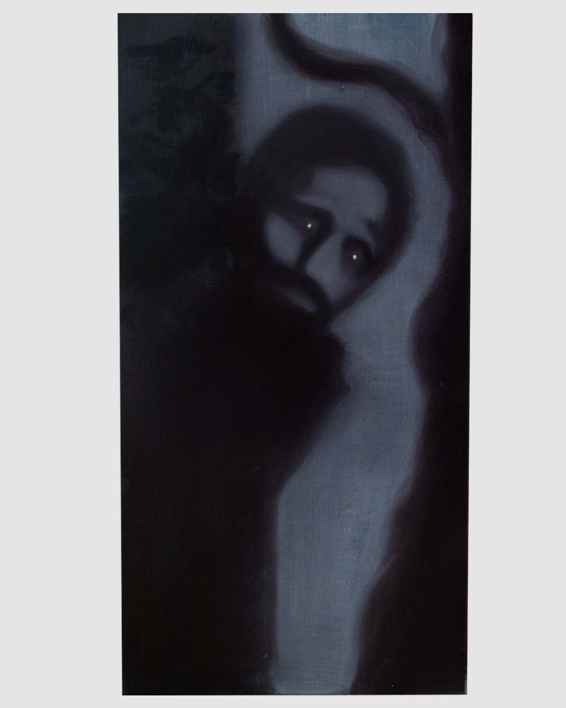
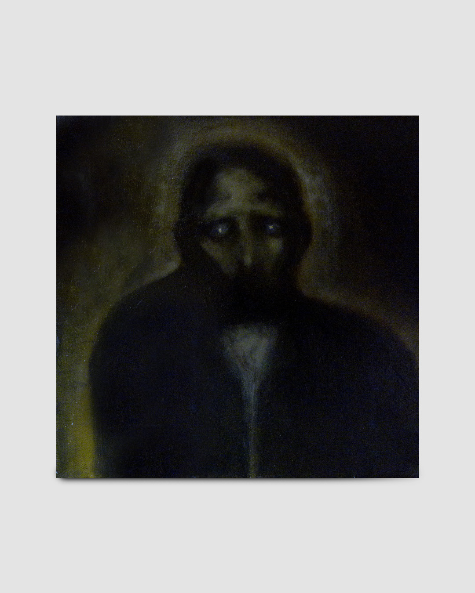
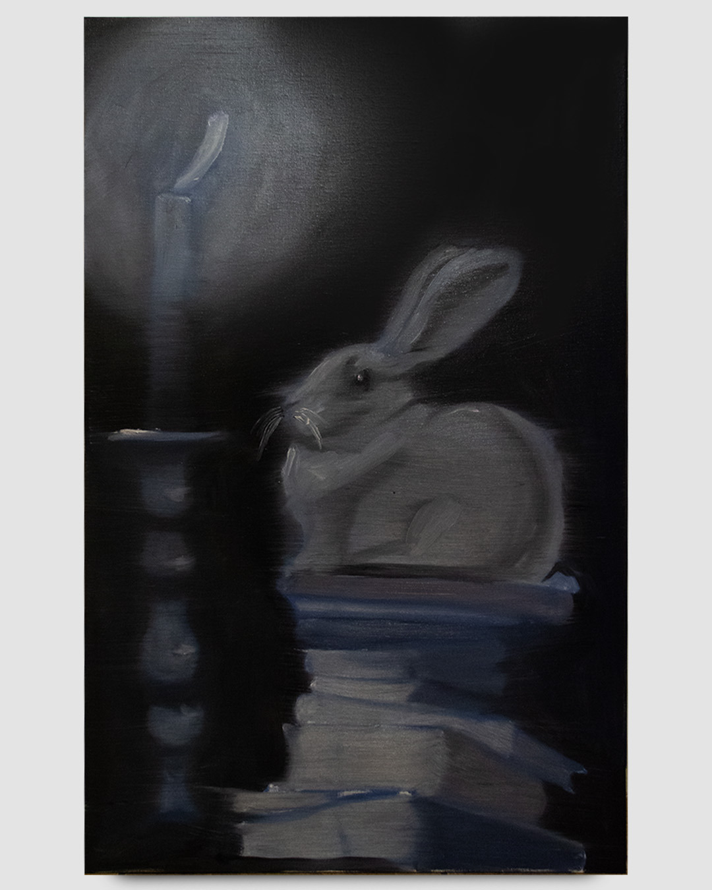
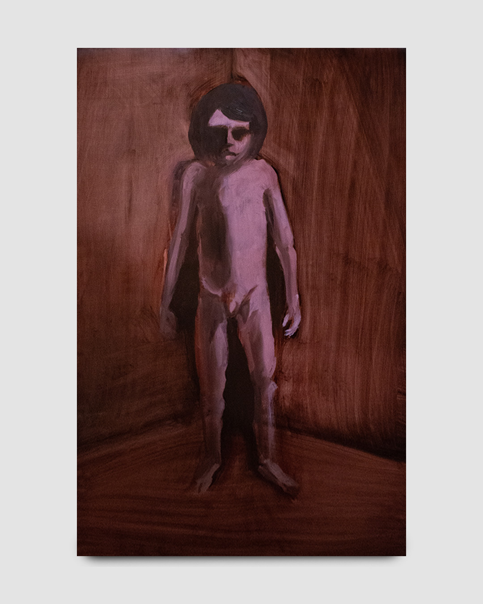
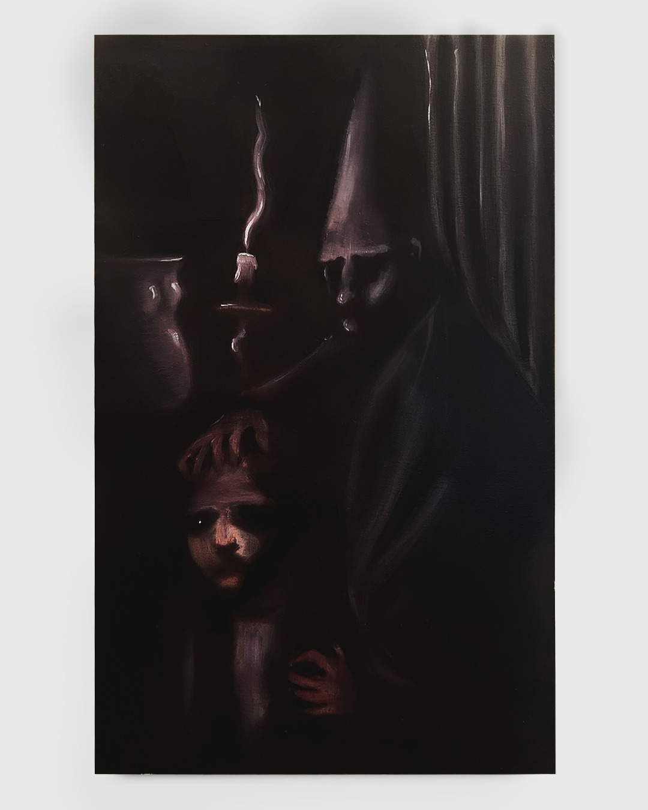

Nichita Herascu
Born in 2000 in Bucharest, Romania.
Resides and works in Bucharest, Romania.
Education
Selected Exhibitions
Painting is a way of thinking with the hand. Each work begins not with an image in mind but with a surface and a question — what remains when everything unnecessary is removed.
Process
The works are built in layers, slowly. Oil on canvas or linen, sometimes panel. Colour is arrived at through mixing and erasure rather than selection. A painting is finished when it starts to resist further change.
Place
Much of the work is rooted in landscape — not as subject but as condition. The flatness of the east, the grey weight of winter light, the particular silence of fields at the edge of a town.
Biography
Nichita Herascu is a painter based in Europe. He studied fine art and has exhibited work internationally. He is currently working on a new body of work.